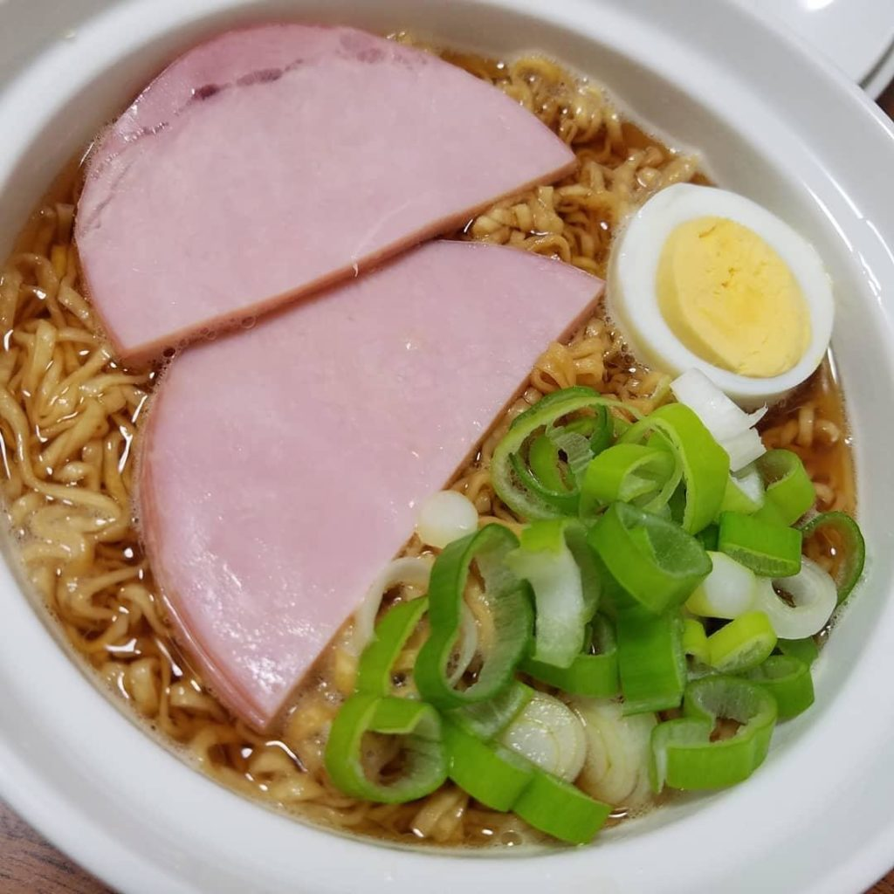
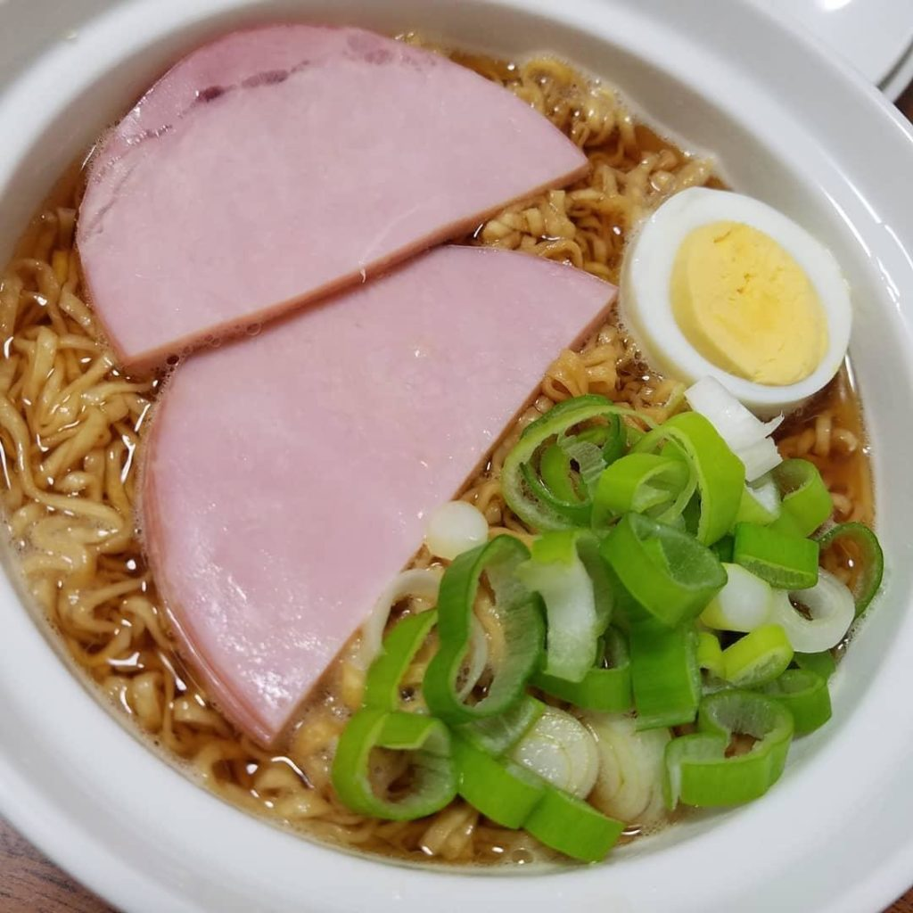

How to make Ham Noodles from Ponyo
 

Description
Our best ever spaghetti bolognese is super
easy and a true Italian classic with a meaty,
chilli sauce.
The flavors come together so nicely in this
spaghetti, no one will believe it’s
made with plain canned tomato sauce and
it’s ready in only 10 minutes!
Ingredients
- Spaghetti
- Olive oil
- Oregano
- Tomato sauce
- Garlic
- Salt & Pepper
- Parmesan cheese
Steps to cook the spaghetti pasta
Everything cooks in one pot for this spaghetti
with tomato sauce recipe!
- Cook spaghetti: Fill a large Dutch
oven or pot with cold water 3/4 full and bring
to a boil. Add 2 tsp salt and spaghetti
- Ensure pasta does not stick
together: Seperate pasta with tongs
a few times during the first 2 minutes of cooking
to ensure it does not stick. Keep cooking
uncovered for 5 more minutes until sufficiently
soft, yet still slightly firm
- Drain pasta: Test the spaghetti
for doneness towards the end by grabbing one strand
on to a plate with tongs. The key to good pasta is
pasta with a bite. Drain in to a collander
- Cook garlic:Return the pot
to medium head and add the olive oil, 4 cloves
garlic, and oregano. Cook for 1 minute, stirring
occasionally.
- Add remaining ingredients:
Drained pasta, tomato sauce, remaining 1/2 tsp salt,
ground black pepper and add 1 more fresh garlic
clove. Stir gently until warmed through.
- Sprinkle with parmesan...
and serve immediately!